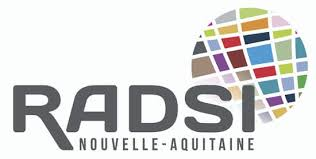
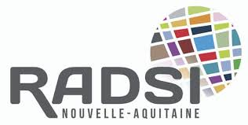

Commission collectivités collectes des bouchons
L’association Eau Vive Pau Pyrénées mène donc depuis trois ans la collecte de bouchons de liège usagés pour financer des projets d’accès à l’eau potable, construction de puits de forage et latrines dans des villages en Afrique subsaharienne (Togo, Burkina Faso, Mali, Niger et Sénégal). Ces bouchons sont revendus et recyclés par la Société Agglolux « Les Liégeurs Gascons » à Soustons dans les Landes, qui leur donne une nouvelle vie en les transformant en panneaux et rouleaux de liège aggloméré (Isolant thermique et phonique, habillage murs et plafonds, design et loisir) et en différents objets du quotidien.
.jpg)
Afin d’aider au financement de projets humanitaires un membre de l’association a proposé que l’on mette en place l’opération « collecte de bouchons de liège ». J’ai tout de suite adhéré à cette proposition qui me permettait d’apporter une aide concrète à l’association.
Des points de collecte ont été mis en place dans les mairies, commerces, déchetteries, bars et restaurants.
Pour une tonne de bouchons la société AGGLOLUX nous reverse 350€ ! A noter : un bouchon de vin pèse 4g et un bouchon de champagne 10g Aidez nous en participant à cette collecte de bouchons:- Le liège est un produit naturel
- C’est un geste écologique pour la planète grâce au recyclage
- C’est un geste solidaire pour les Sahéliens sans accès à une eau saine


 
